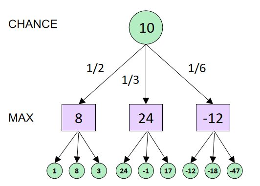
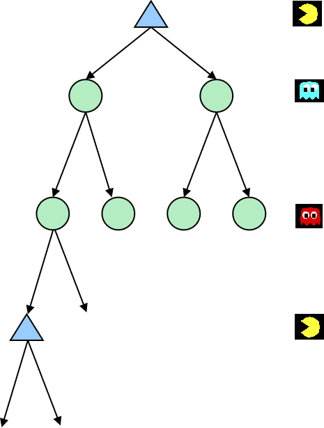

期望最大化搜索(Expectimax Search)
对手可能没有足够聪明来得到最佳解决方案。因此，我们将对手节点视为一个机会节点，它有一定概率实施某种策略。为了获得最佳结果，我们的策略是最大化期望效用。
因此，值现在应该反映平均情况（期望最大化）的结果，而不是最坏情况（极小化极大）的结果。
- Max节点类似于极小化极大搜索
- Chance节点类似于极小节点，但结果是不确定的
- 计算它们的期望效用
- 即取子节点的加权平均值（期望值）
期望最大化搜索（Expectimax Search）是一种用于处理随机性的搜索算法，通常用于解决带有随机元素的游戏或决策问题。与传统的最大化搜索（如极小化极大算法）不同，期望最大化搜索考虑到对手的随机行为，以及环境中的随机事件。在期望最大化搜索中，对于每个决策点，会计算所有可能行动的期望值，而不仅仅是选择最大化价值的行动。这种方法能更好地处理不确定性，并在评估可能性时考虑到随机性。
随机游戏的搜索树具有额外的节点类型：机会节点。机会节点 u 表示了在其父节点是某个玩家的情况下可用移动的概率分布。节点不再具有极小化极大值，而是具有期望最大化值。对于 MIN 和 MAX 节点，它们的值与极小化极大值相同，但对于机会节点，期望最大化值是其子节点的期望值。
def value(state): if the state is a terminal state: return the state's utility if the next agent is MAX: return max-value(state) if the next agent is EXP: return exp-value(state)

def max-value(state): initialize v=-∞ for each successor of state: v = max(v, value(successor)) return v
def exp-value(state): initialize v=0 for each successor of state: p = probability(successor) v += p * value(successor) return v
期望最大化搜索不能应用剪枝。

在期望最大化搜索中，我们对对手（或环境）在任何状态下的行为有一个概率模型。
- 模型可以是简单的均匀分布（掷骰子）
- 模型可能复杂，并需要大量计算
- 我们为我们无法控制的任何结果都设置了一个机会节点：对手或环境
- 模型可能会指出对手的行动是有可能的！
暂时假设每个机会节点都带有概率，指定了其结果的分布。
重要的一点要记住的是，仅仅因为我们分配了反映我们信念的概率给结果，并不意味着另一面就是抛硬币。
如果认为幽灵向左走的概率是 20%，这并不意味着幽灵具有随机数生成器。这只是意味着根据模型（可能是一个简化）所得到的。